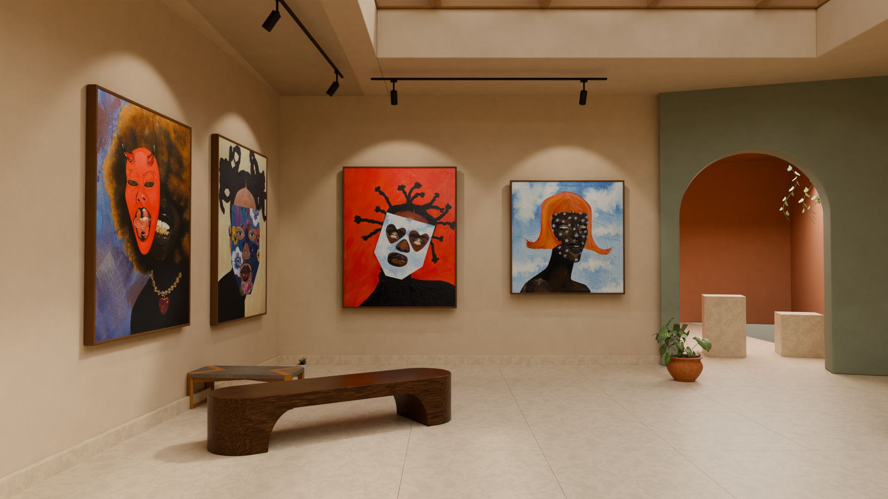

<!doctype html>
<html lang="nl"><meta charset="utf-8"><meta name="viewport" content="width=device-width,initial-scale=1"><title>Lee Mobero — Blender ontwerp</title>
<style>
html,body{margin:0;background:#191915;color:#eee;font:14px system-ui;height:100%}main{height:100%;display:grid;grid-template-rows:auto minmax(0,1fr)}nav{padding:12px 20px;display:flex;flex-wrap:wrap;gap:12px;align-items:center}button{background:#33352e;color:inherit;border:1px solid #60644e;border-radius:6px;padding:8px 14px;cursor:pointer}button[aria-pressed=true]{background:#62654e}nav span{margin-right:auto}#stage{position:relative;min-height:0;overflow:hidden}img{height:100%;width:100%;object-fit:contain}#panorama{position:absolute;inset:0;touch-action:none;cursor:grab;outline-offset:-3px}#panorama:active{cursor:grabbing}canvas{display:block}#hint{position:absolute;bottom:16px;left:50%;transform:translateX(-50%);background:#191915bb;padding:8px 14px;border-radius:6px;pointer-events:none;white-space:nowrap}[hidden]{display:none!important}
label{display:flex;align-items:center;gap:8px}input[type=range]{width:120px;accent-color:#aaa27f}#blend{position:absolute;inset:0;pointer-events:none}output{width:42px}#weather-status,#weather-credit{position:absolute;left:16px;bottom:55px;background:#191915bb;border-radius:4px;padding:4px 8px;font-size:12px;pointer-events:none}#weather-status:empty{display:none}#weather-credit{bottom:30px;pointer-events:auto}a{color:inherit}select{background:#33352e;color:#eee;border:1px solid #60644e;padding:6px;border-radius:4px}</style><main><nav><span>Blender · ontwerp</span><label>Daglicht <input id="daylight" type="range" min="0" max="2" step="0.01" value="1" disabled><output id="daylight-value">100%</output></label><label>Lucht <select id="sky-preset"><option value="28">Licht bewolkt</option><option value="0">Helder</option><option value="95">Bewolkt</option><option value="night">Nacht</option></select></label><label>Regen <input id="rain" type="range" min="0" max="1" step="0.05" value="0" aria-label="Regenintensiteit"></label><button id="visitor-weather">Weer op mijn locatie</button><button data-mode="render" aria-pressed="true">Laatste render</button><button data-mode="reference" aria-pressed="false">Sfeerontwerp</button><button data-mode="panorama" aria-pressed="false">360° bekijken</button></nav><div id="stage"><div id="panorama" hidden tabindex="0" role="region" aria-label="360 graden ontwerp, sleep of gebruik pijltjestoetsen om rond te kijken"></div><div id="weather-status" role="status"></div><div id="weather-credit" hidden>Weer: <a href="https://www.met.no/" target="_blank" rel="noopener">MET Norway</a> · <a href="https://creativecommons.org/licenses/by/4.0/" target="_blank" rel="noopener">CC BY 4.0</a> · vertaald naar lucht en licht</div><div id="hint" hidden>Sleep om rond te kijken · scroll om te zoomen</div></div></main><script type="module" src="./viewer.js"></script></html>


